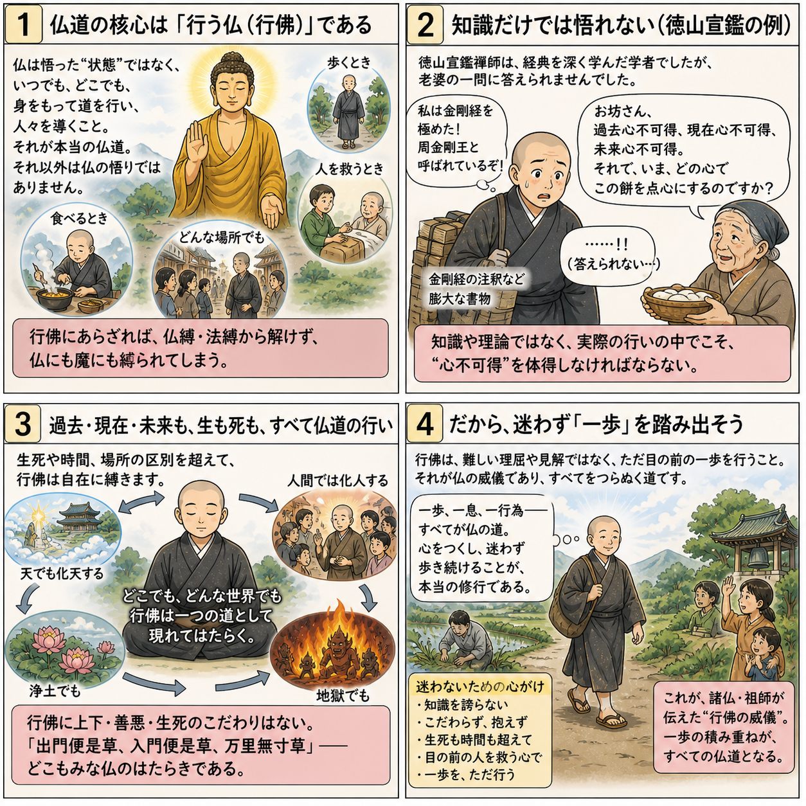

七十五巻 巻一覧
正法眼藏第8 心不可得
本紹介ページの導入・語彙・深掘り・クイズは tools/regen_volume_intro_from_corpus.py が OpenAI API で生成したものです（入力は当巻の原文からの短い抜粋のみ）。内容はモデル出力のため、重要箇所は必ず原文・教本と照合してください。
出典: https://shomonji.or.jp/zazen/doc/genzou.html
原文・現代語訳の全文は 全文ページを参照してください。
この巻の紹介（導入）
釋迦牟尼佛は過去心、現在心、未來心が不可得であると述べている。
この教えは心の本質についての深い理解を促すものであり、自己の心を探求することが重要である。
語彙の足場
- 釋迦牟尼佛：仏教の開祖であり、悟りを開いた者。
- 不可得：得ることができない、または存在しないことを示す言葉。
- 心：思考や感情を司るもので、ここではその本質についての探求がなされている。
- 問取：問いかけを通じて真理を探求する行為。
- 道著：道理を理解すること、または悟りに至ること。
原文（要点の抜粋）
当巻の冒頭付近からの短い抜粋です。長い引用は載せていません。 全文は全文ページを参照してください。出典はリポジトリ内 doc/正法眼蔵.txt です。原文の参照元: https://shomonji.or.jp/zazen/doc/genzou.html
釋迦牟尼佛言、過去心不可得、現在心不可得、未來心不可得。
これ佛祖の參究なり。不可得裏に過去現在未來の窟籠を剜來せり。しかれども、自家の宿籠をもちゐきたれり。いはゆる自家といふは、心不可得なり。而今の思量分別は、心不可得なり。使得十二時の渾身、これ心不可得なり。佛祖の入室よりこのかた、心不可得を會取す。いまだ佛祖の入室あらざれば、心不可得の問取なし、道著なし、見聞せざるなり。經師論師のやから、聲聞緣覺のたぐひ、夢也未見在なり。
その驗ちかきにあり、いはゆる徳山宣鑑禪師、そのかみ金剛般若經をあきらめたりと自稱す、あるいは周金剛王と自稱す。ことに靑龍疏をよくせりと稱ず。さらに十二擔の書籍を撰集せり、齊肩の講者なきがごとし。しかあれども、文字法師の末流なり。あるとき、南方に嫡嫡相承の無上佛法あることをききて、いきどほりにたへず、經疏をたづさへて山川をわたりゆく。ちなみに龍潭の信禪師の會にあへり。かの會に投ぜんとおもむく、中路に歇息せり。ときに老婆子きたりあひて、路側に歇息せり。
ときに鑑講師とふ。なんぢはこれなに人ぞ。
婆子いはく、われは買餠の老婆子なり。
徳山いはく、わがためにもちひをうるべし。
婆子いはく、和尚もちひをかうてなにかせん。
徳山いはく、もちひをかうて點心にすべし。
婆子いはく、和尚のそこばくたづさへてあるは、それなにものぞ。
徳山いはく、なんぢきかずや、われはこれ周金剛王なり。金剛經に長ぜり、通達せずといふところなし。わがいまたづさへたるは、金剛經の解釋なり。
かくいふをききて、婆子いはく、老婆に一問あり、和尚これをゆるすやいなや。
徳山いはく、われいまゆるす。なんぢ、こころにまかせてとふべし。
図解（4コマ・AI生成）
教義の根拠は原文・出典に従い、漫画は比喩の補助に留めてください。

深掘り（読解の手掛かり）
- 過去、現在、未来の心はそれぞれ存在しないとされる。
- 徳山禪師は老婆との対話を通じて心の不可得を体現している。
- 心不可得の教えは、自己の心を理解するための重要な指針となる。
確認（形成評価）
各設問の下の「採点」で正誤を表示します（ブラウザ内のみ。ログは送りません）。